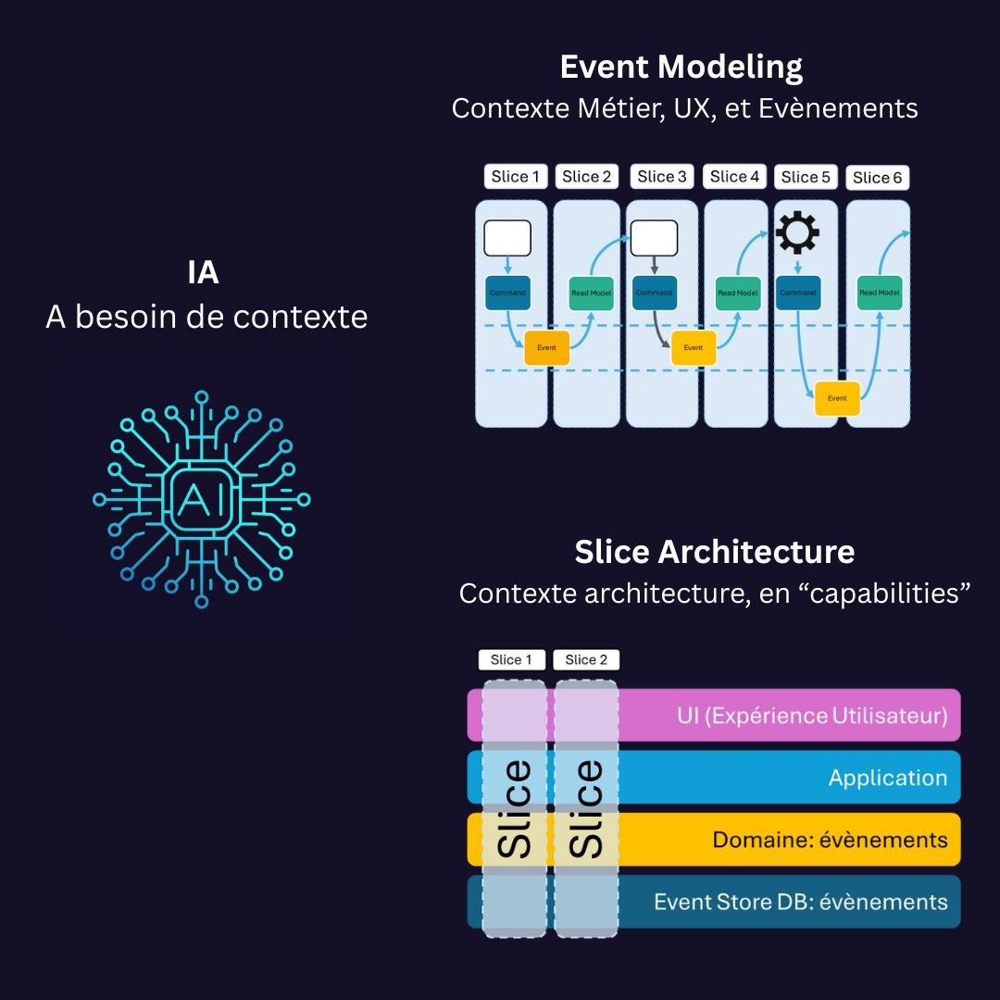

L’IA a besoin de contexte
Les modèles d’IA sont efficaces lorsqu’ils reçoivent des signaux explicites : les acteurs, les actions, les conséquences. Plus le contexte est clair, plus l’IA comprend, apprend et propose des décisions cohérentes.
L’IA devient réellement puissante quand elle comprend le contexte, les intentions métier et les structures logicielles qui donnent sens aux données. Avec Event Modeling, Event Sourcing et la Vertical Slice Architecture, toutes les pièces s’alignent. 
Les modèles d’IA sont efficaces lorsqu’ils reçoivent des signaux explicites : les acteurs, les actions, les conséquences. Plus le contexte est clair, plus l’IA comprend, apprend et propose des décisions cohérentes.
Event Modeling décrit le système à travers les événements, les intentions des utilisateurs et les résultats attendus. C’est une représentation explicite du pourquoi et du comment : une base de compréhension idéale pour l’IA.
Les événements ne sont pas que du contexte : ce sont aussi des données riches et temporelles. Ils racontent l’histoire du système, et constituent une source d’apprentissage continue pour l’IA.
Chaque slice relie un scénario métier à sa mise en œuvre technique. Cette approche favorise la cohérence entre le modèle et le code, et fournit des repères explicites que l’IA peut exploiter.
Event Modeling structure le contexte métier. Event Sourcing conserve les faits. Vertical Slice Architecture donne une forme claire au système. Ensemble, ils forment un terrain idéal pour une IA vraiment efficace.